Provocarea 1A5−1
Provocarea 1A5−1
Ai mai întâlnit o reprezentare grafică asemănătoare celei din figura precedentă?
A.5. |
Modelul oscilatorului armonic |
Metoda descrisă în secţiunea precedentă îţi permite să analizezi, cu gradul de precizie pe care îl doreşti, orice tip de mişcare. Dacă alegi paşi şi mai mici, precizia calculelor creşte.
În cazul unui punct material cu masa 1 kg, care începe să se mişte de la elongaţia 1 m, numai sub acţiunea unei forţe elastice (constanta elastică fiind 1 N/m), calculele făcute cu paşi de o miime de secundă arată că punctul material trece prima dată prin poziţia de echilibru cândva între momentele 1,570 s şi 1,571 s (mai aproape de 1,571 s). Perioada oscilaţiilor este, aşadar, între 6,280 s şi 6,284 s (mai aproape de 6,284 s). Reprezentarea grafică a mişcării calculate a acestui oscilator este prezentată în figura 1A5−1.
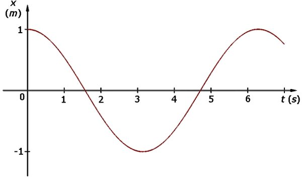 Fig. 1A5−1. Reprezentarea grafică a mişcării calculată în paşi de câte o miime de secundă.
Provocarea 1A5−1
Ai mai întâlnit o reprezentare grafică asemănătoare celei din figura precedentă?
Figura 1A5−2 este reprezentarea grafică a unei elongaţii care se modifică în timp după legea:
| x = 1 m · cos (1 s−1 · t). | (1) |
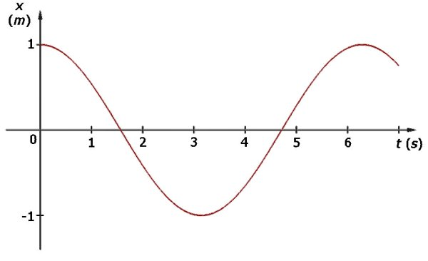 Fig. 1A5−2. Reprezentarea grafică a unei elongaţii care se modifică în timp după legea (1).
Mişcarea dată de legea (1) este practic identică cu cea calculată în paşi de câte o miime de secundă! Perioada mişcării dată de legea (1) este dată de perioada funcţiei cosinus. Argumentul funcţiei cosinus se modifică într−o perioadă cu 2 · p = 6,28318..., adică după 6,28318... s. Potrivirea cu perioada mişcării calculată în paşi de o miime de secundă este aproape perfectă!
Pentru a exprima o lege de mişcare cum este (1), poţi folosi, după dorinţă, fie funcţia cosinus, fie sinus, deoarece
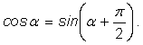
Funcţiile cosinus şi sinus sunt numite generic funcţii armonice. Orice modificare periodică a unui parametru, care poate fi descrisă cu ajutorul funcţiilor armonice, este o modificare armonică.
 Numim oscilaţie armonică o oscilaţie a cărei elongaţie se modifică armonic în timp.
Numim oscilaţie armonică o oscilaţie a cărei elongaţie se modifică armonic în timp.
Un oscilator care oscilează armonic este un oscilator armonic.
Provocarea 1A5−2
Un punct material având masa m se mişcă circular şi uniform pe un cerc de rază R, în sens trigonometric, cu viteza unghiulară ω.
La momentul considerat iniţial, punctul material se află într−o poziţie care corespunde unghiului φ0 cu axa Ox (figura 1A5−3).
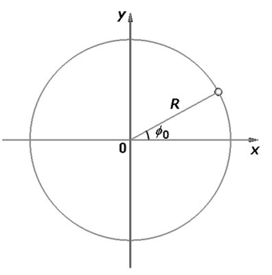
Fig. 1A5−3. Poziţia iniţială (la momentul considerat zero) a unui punct material care se mişcă circular şi uniform.
Care te aştepţi să fie legea care descrie modificarea în timp a coordonatei x a acestui punct material?
La momentul t, unghiul care descrie poziţia punctului material a crescut cu ω · t, devenind astfel ω · t + φ0 (figura 1A5−4).
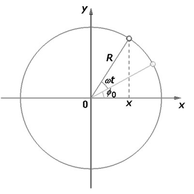
Fig. 1A5−4. Poziţia la momentul t a punctului material care se mişcă circular şi uniform.
Coordonata x a punctului material la momentul t este:
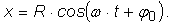
Legea după care se modifică în timp coordonata x a punctului material este o lege armonică. Raza R este amplitudinea coordonatei x.
Provocarea 1A5−3
Mişcarea circulară şi uniformă a punctului material din figura 1A5−4 are loc sub acţiunea unei forţe centripete (forţa are mărimea constantă m · ω2 · R şi este orientată mereu către centrul cercului).
Care te aştepţi să fie legea care descrie proiecţia acestei forţe de−a lungul axei Ox?
În situaţia prezentată în figura 1A5−4, unghiul format de forţa centripetă cu axa Ox este p − (ω · t + φ0). Aşadar, proiecţia acesteia de−a lungul axei Ox este:
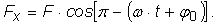
Folosind relaţia:
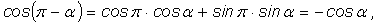
rezultă ca proiecţia forţei centripete de−a lungul axei Ox este dată de:
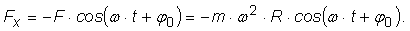
Dar 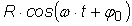 este chiar coordonata x a punctului material. Aşadar,
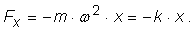
Proiecţia forţei centripete pe axa Ox este proporţională şi de semn contrar cu coordonata x, constanta de proporţionalitate fiind m · ω2. Este asemenea unei forţe elastice!
Numim forţă de tip elastic o forţă care, într−un punct al unei axe, are mărimea proporţională cu acea coordonată şi este orientată înspre
originea axei.
Constanta de proporţionalitate este o constantă de tip elastic.
Putem aşadar descrie o mişcare oscilatorie armonică astfel:
| 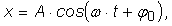 | (2) |
unde x este elongaţia, A este amplitudinea, iar argumentul funcţiei cosinus descrie stadiul în care a ajuns oscilaţia la momentul t.
Când argumentul funcţiei cosinus este 0, 2 · p, ... (în general, multiplu par de p), elongaţia are valoarea maximă pozitivă.
Când argumentul funcţiei cosinus este 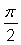, 3 · , ... (în general multiplu impar de ),elongaţia are valoarea zero (oscilatorul trece prin poziţia de echilibru), şi aşa mai departe, fiecare valoare a argumentului corespunzând unui anumit stadiu al oscilaţiei.
Numim faza unei oscilaţii armonice argumentul funcţiei armonice care descrie oscilaţia.
Faza oscilaţiei descrie stadiul atins de oscilaţie la un moment dat.
Parametrul φ0 este faza la momentul zero. Poţi alege drept moment zero oricare moment de timp convenabil.
Numim faza iniţială a unei oscilaţii faza acelei oscilaţii la momentul zero.
Faza oscilaţiei creşte în timp în ritmul dat de parametrul ω, care este viteza cu care se modifică faza.
Numim pulsaţia unei oscilaţii viteza cu care creşte faza acelei oscilaţii.
Unitatea de măsură a pulsaţiei este s−1 (sau radian/secundă, radianul fiind o unitate de măsură adimensională).
Perioada T a oscilaţiei corespunde modificării cu 2 · p a argumentului funcţiei armonice. Astfel,
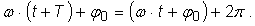
După simplificarea expresiei precedente, rezultă relaţia dintre pulsaţia şi perioada unei oscilaţii armonice:
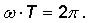
Provocarea 1A5−4
Care te aştepţi să fie relaţia dintre pulsaţia şi frecvenţa unei oscilaţii armonice?
Expresia (2) este un instrument puternic, care îţi permite să descrii complet oricare mişcare oscilatorie armonică!